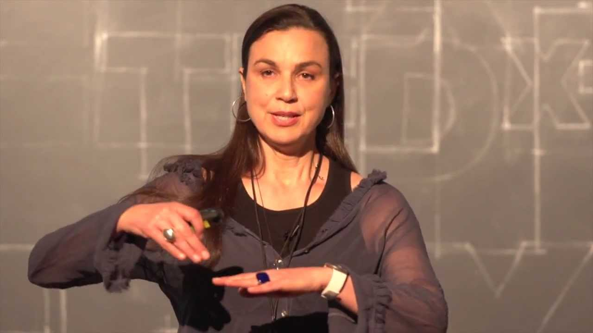
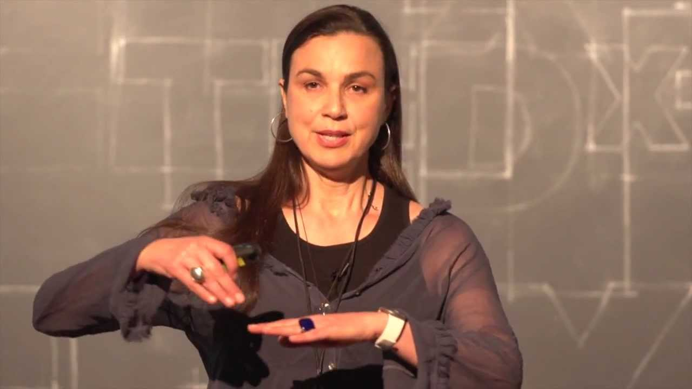

Victoria Vesna
Information
Victoria Vesna was born in 1959 in Washington DC. She received a Fine Arts Diploma from the University of Belgrade, Yugoslavia in 1984 and in 2000, she completed her Ph.D. at The Centre for Advanced Studies in Interactive Arts in the University of Wales with a thesis titled "Networked Public Spaces: An Investigation into Virtual Embodiment" in 2000. Vesna is well known for being one of the first to create interactive artworks related to nanotechnology, alongside collaborator Jim Gimzewski. She is a digital media artist and professor at UCLA's digital media arts department. She creates internet, computer, and video art, many of which are interactive and relate to feminism. She has been creating these works since the early 1980s. She is known to engage in experimental creative research between mediums relating to art and technology. Using her art she evaluates how technology relating to communication can affect groups and how scientific innovation can change perception.
 
